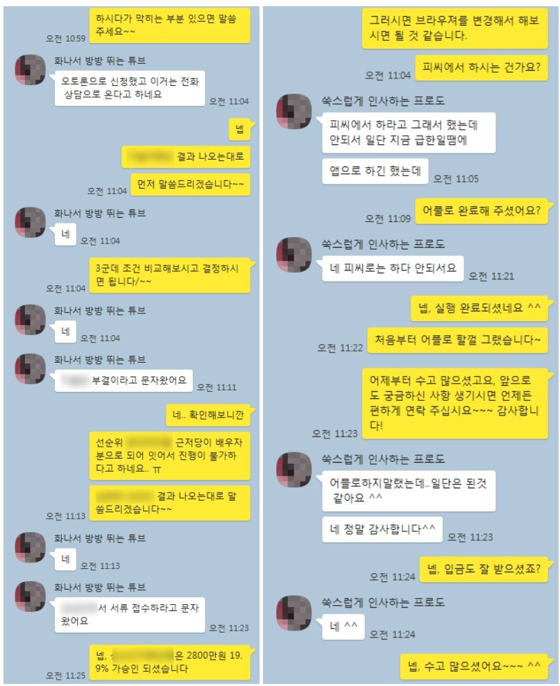

주부 조건으로 후순위 차량담보대출 3200만원 승인 사례
안녕하세요? 뱅크앤론 조영우 이사 입니다~
오늘은 할부가 남아있는 자동차 후순위 담보대출로 승인된 사례에 대하여 공유 드리겠습니다.
해당 고객님의 대략적인 프로필은 아래와 같습니다.
- 30대 여성
- 주부 (소득증빙 불가)
- 기대출 : 캐피탈 차량할부 3000만원, 캐피탈 신용대출 2000만원, 저축은행 500만원
직장이 없는 주부님으로 이미 대출을 5천만원 이상 사용중이셔서 더 이상 신용대출는 진행이 불가한 상황이셨습니다.
그리고 이미 타사를 통해 모두 신용조회를 한 상태셔서, 진행 가능성이 있는 차량 담보대출로 바로 안내를 드렸고, 차량 할부 뒤로 후순위 차량담보대출 3200만원 승인되어 필요자금 전액 해결할 수 있게 되셨습니다.
아래는 해당 고객님과 실제 나눈 대화내용입니다. 참고 부탁 드리겠습니다~
